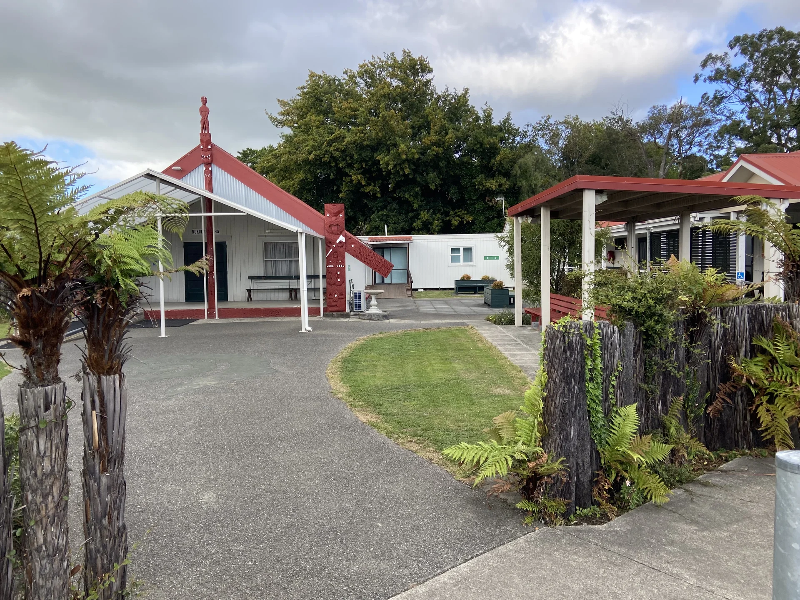

Where
Te Hepara Pai Church is located at 131 Cole Street Masterton, near Douglas Park School.
- The church can be accessed from Essex Street via the walkway through Douglas Park.
- There is parking on the street outside and there is an Accessibility Park inside the grounds.
- The Church and Marae are fully accessible.
- We are within walking distance of St Matthew’s Collegiate, Wairarapa College and approximately a 20‑minute walk from the town centre.